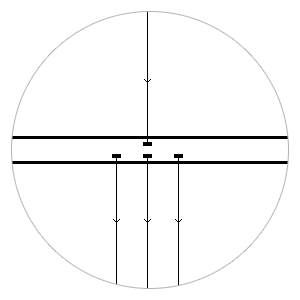
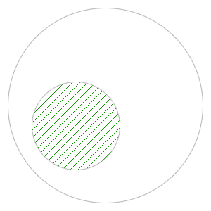
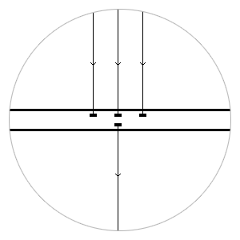

64+64
Formula
- Up to 64 RX & 64 TX ports
- Support 1 GbE, 10 GbE, 40 GbE
- Each port simultaneously RX & TX
- Rack mount 1U

Load balancing
- Simmetric balancing
- Five tuple balancing
- Balancing by MAC
- Balancing by IP

Filtering
- 10k+ non-blocking filters
- Filters by Ethertype
- Filters by MAC, Port, IP
- Support VLAN
- Deep packet inspection

Aggregation
- Simple traffic aggregation
- Aggregation with filters
- Loopback on port
- Force up
Built-in monitoring
- Realtime & aggregate statistic
- Bitrate on each port & rule
- Drops, CRC-erros
- Graphics
Technical details
-
48 х 1/10GbE SFP+ (48 TX + 48 RX) and 4 х 10/40GbE QSFP+ ports
-
Up to 128 RX/TX ports
-
Non-blocking matrix (bandwidth up to 1,28 Tb/s)
-
Packet load up to 960 Mpps
-
Low latency 500 nanoseconds
-
12K Jumbo frame support
-
Packet buffer — 9 Mb
-
Fault tolerance and hot-swap
-
Power consumption up to 450 W
-
1U
-
Dimension (HxWxD): 44 x 435 x 394 mm
-
Weight 9,5 kg
-
Mirroring, redirect, drop
-
Each port is independent for RX/TX
-
Force up mode
-
Aggregation/balancing from 10 GbE ports into 10/40 GbE ports – MPLS support
-
Management traffic balancing based on following rules:
-
MAC + MAC (symmetric)
-
MAC source + MAC destination – IP + IP (symmetric)
-
IP source + IP destination
-
IP + Port + ProtoType (5 tuple) – EtherType
-
Traffic filtering based on following rules:
-
EtherType
-
MAC source, MAC destination (with mask support) – IP source, IP destination (with mask support)
-
Port source, port destination (with mask support)
-
ProtoType
-
VLAN
-
VLAN2
-
DPI (packet payload)
-
Remote management via web-interface
-
Monitoring statistics of load and errors on interfaces – SNMP support
-
CLI
-
VLAN, VLAN2 tagging
-
Ability for customization
Simple but smart user interface